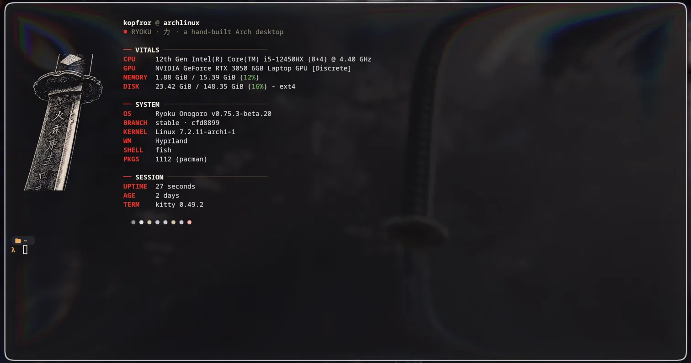

Java
~
❯ cat Main.java
public class Main {
public static void main(String[] args) {
System.out.println("Hello, World!");
}
}
Hello, World!
~
❯ Here are the skills I've built so far!
~
❯ cat Main.java
public class Main {
public static void main(String[] args) {
System.out.println("Hello, World!");
}
}
Hello, World!
~
❯ ~
❯ fastfetch
# don't try this at home
~
❯ sudo rm -rf / --no-preserve-root
The structure: what's on the page.
The style: how it looks.
The behavior: what it does.
In development
I'm building my own AI agent, Blueline. This section will show what it can do once it's ready.
I'm still early with Git. These are the basics I'm learning and using:
# start tracking a project
❯ git init
# choose the files to save
❯ git add .
# save a snapshot with a message
❯ git commit -m "My portfolio website"
# upload it to GitHub
❯ git push origin main
❯ A hand-built Arch Linux desktop on Hyprland.
